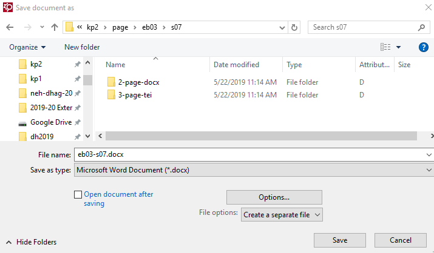

Save and Output
How to output your OCR results.
ABBYY FineReader can output results as anything from a Word document to a text or PDF file. We output as docx because it is XML format and converts well to TEI.
-
To output your finished pages, select them and choose Formatted
text from the drop-down box on the main toolbar. Then click
Save.
Figure 1. The main toolbar.
-
In the Save document as window, make sure you are saving
as an Microsoft Word Document (*.docx).
- Select the option to Create a separate file for each page. (Otherwise, you will output a single file for that includes all pages and have to repeat this step.)
- Uncheck the box for Open document after saving (unless, of course, you actually want to open 250 windows on your desktop).
Figure 2. The Save document as window. 
- Save to the appropriate 2-page-docx folder, as explained in the section on the 2-page-docx Folder.
- Enter the date of output in the Create a Page-Inventory File.